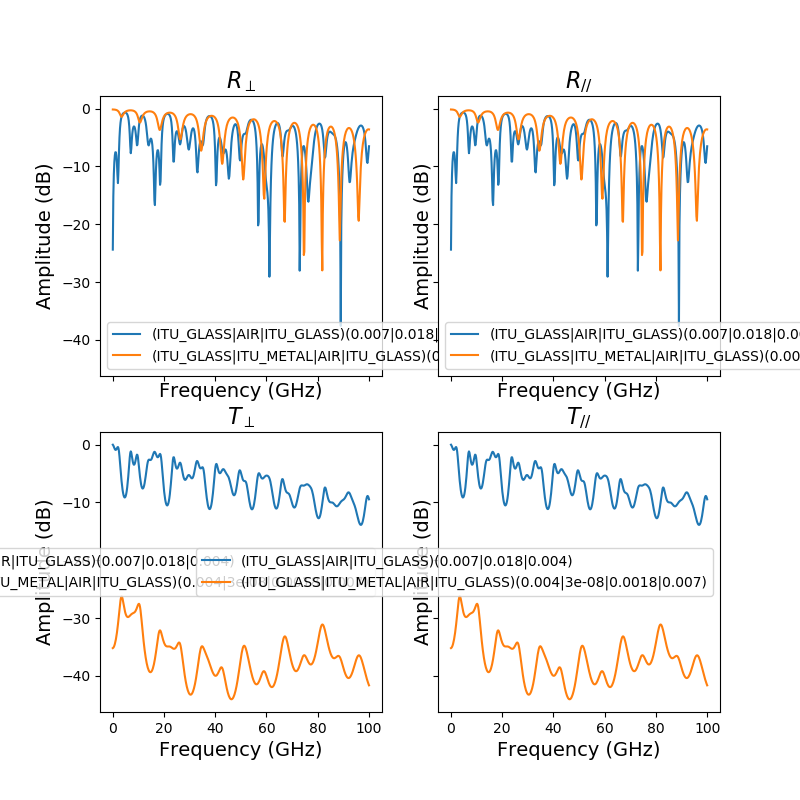

Note
Click here to download the full example code
Material Attenuation for ITU_CONCRETE ITU_GLASS from 0.1 to 100GHz¶
from pylayers.antprop.slab import *
S = SlabDB()
fGHz = np.linspace(0.1,100,500)
theta = 0
S.add(name='window1',lmatname=['ITU_GLASS','AIR','ITU_GLASS'],lthick=[0.007,0.018,0.004])
S.add(name='window2',lmatname=['ITU_GLASS','ITU_METAL','AIR','ITU_GLASS'],lthick=[0.004,30e-9,0.0018,0.007])
S['window1'].eval(fGHz,theta)
S['window2'].eval(fGHz,theta)
f,a = S['window1'].plotwrt('f')
f,a = S['window2'].plotwrt('f',fig=f,ax=a)
plt.show()
Total running time of the script: ( 0 minutes 1.582 seconds)